Many students in North Bengal want to study in government colleges because the fees is low and education is good. These colleges are trusted by students and parents for many years. In places like Siliguri, Darjeeling, Dinajpur, Jalpaiguri and Cooch Behar, there are some good government colleges where students from nearby towns and villages come to study.
This blog talks about some popular government colleges in North Bengal. We have included colleges from different districts so that students can get a basic idea before choosing. If you are confused about where to take admission, this list may help you a little.
Government Colleges in Jalpaiguri District
Ananda Chandra College
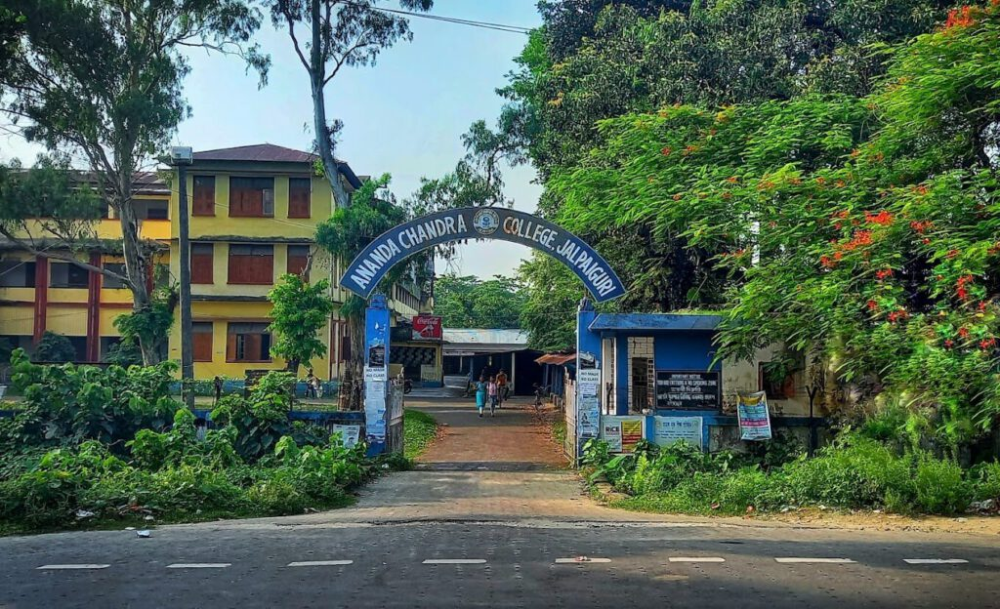
Ananda Chandra College, mostly called AC College, is one of the old government colleges in North Bengal. It is affiliated with North Bengal University and many students from nearby areas study here. The college has a big campus with green trees, open space and a calm environment which feels good for studying. The college offers many undergraduate courses in Arts and Science, and also has a postgraduate course in Bengali. There are labs, playground and basic facilities for students. AC College also supports student activities like NCC, NSS, seminars, cultural programs and different clubs. These activities help students gain confidence and learn teamwork along with studies.
Courses: B.A, B.Com and B.Sc
Fees: The cost of a first-year bachelor can range from 4870 to 13570 approx.
Website: https://www.accollege.in/
Contact Info:
Mobile Number: 3561255554
Email: accjal@gmail.com
Address: Siristola Near Ac College, Jalpaiguri
Dhupguri Girl’s College
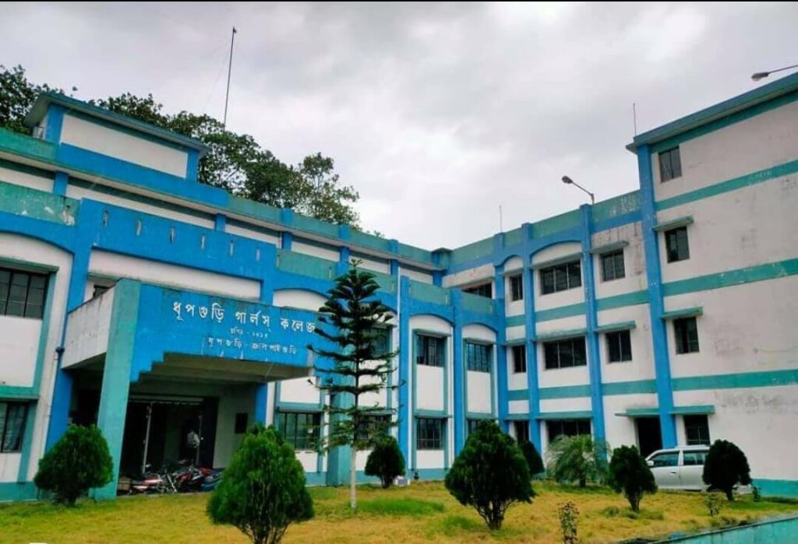
Dhupguri Girls College is meant mainly for girls who want to continue studies after school. Many students from Dhupguri and nearby areas come here. The college offers subjects in arts stream and helps girls build confidence through education. Classes are simple and teachers are supportive. The college environment feels safe and comfortable for girl students. For many families, this college is important because it allows daughters to study without going far from home.
Courses: B.A
Fees: The fees can range from 15,000 to 22,000 approx for a 4-Year Undergraduate degree.
Website: https://dhupgurigirlscollege.ac.in
Contact Info:
Mobile Number: 1234567890
Email: dhupgurigirlscollege1@gmail.com
Address: College Para, P.O. : Dhupguri, Jalpaiguri
Jalpaiguri Government Engineering College
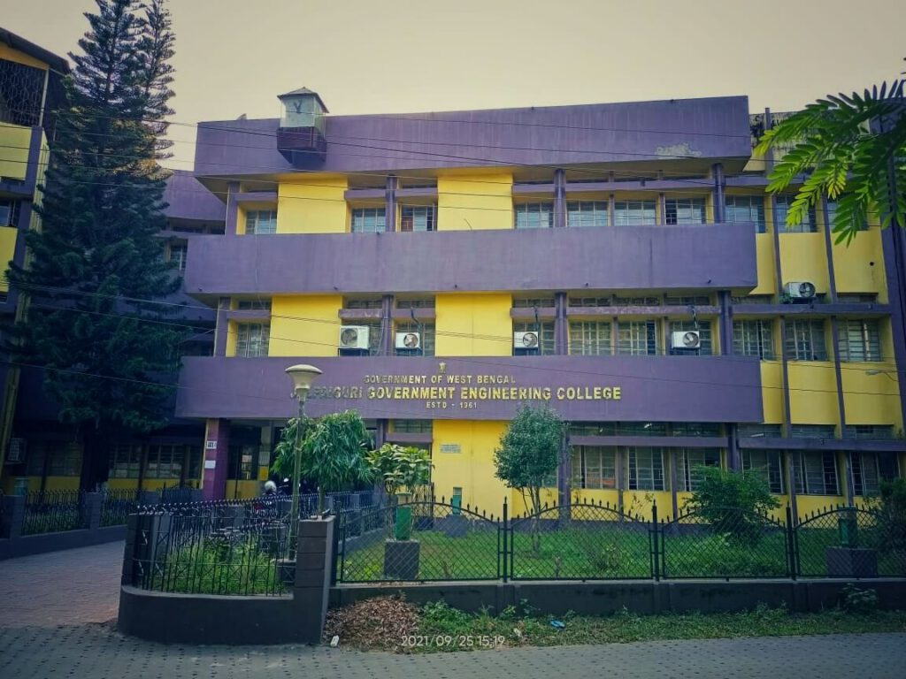
Jalpaiguri Government Engineering College is known as JGEC. It is one of the old engineering colleges in North Bengal. Students come here from different parts of West Bengal to study engineering. The campus is large and has hostels, classrooms, and labs. Engineering students study hard here, and college life is quite busy. Many students prepare for future jobs while studying here. This college has a strong name in technical education in this region.
Courses: B.Tech and M.Tech
Fees: The total course fees can range from 48,000 to 1,20,000 approx.
Website: https://jgec.ac.in
Contact Info:
Mobile Number: 3561255131
Address: Jalpaiguri, West Bengal 735102
Maynaguri College
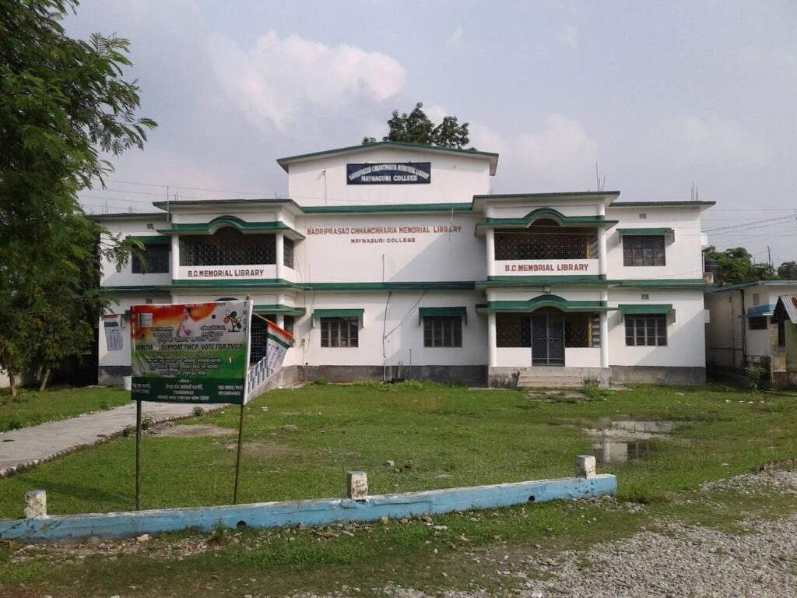
Maynaguri College is a government college located near Maynaguri town in Jalpaiguri district. The college is surrounded by open land and greenery, so the environment is quiet and good for studies. It was established in 1999 and is affiliated with the University of North Bengal. The college mainly offers undergraduate courses in Arts and Science for students from nearby areas. Facilities like classrooms, library and basic labs are available for students. Maynaguri College is helpful for students who want to continue higher education without going far from home and at an affordable cost.
Courses: B.A and B.Sc
Fees: The total course fees can range from 20,000 to 30,000 approx.
Website: https://maynaguricollege.ac.in
Contact Info:
Mobile Number: 3561234298
Email: collegemaynaguri@gmail.com
Address: NH31, Bagzan, Maynaguri, Jalpaiguri, West Bengal 735302
P.D. Women’s College
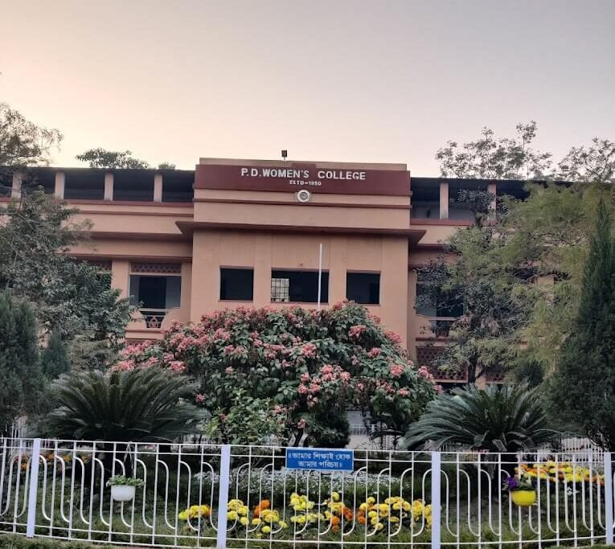
Prasannadeb Women’s College, commonly called P.D. Women’s College, is one of the oldest women’s colleges in North Bengal, located in Jalpaiguri town. It was started in 1950 to give good higher education especially to women, and it is affiliated to the University of North Bengal. The college offers many courses in Arts, Science and even BBA and tourism subjects, with honours and general options so students can choose what they like. It also has activities like NSS, career guidance and special cells to support girls and women on campus. P.D. Women’s College works to make students confident, skilled and ready for today’s world while also focusing on women’s empowerment.
Courses: B.A, BBA and B.Sc
Fees: The total course fees can range from 10,000 to 20,000 approx.
Website: https://www.pdwomenscollege.org
Contact Info:
Mobile Number: 03561230146
Email: pdwomenscollege@gmail.com
Address: Shankar Mandal Rd, Jalpaiguri
Government Colleges in Darjeeling District
Darjeeling Government College

Darjeeling Government College has been around since 1948 and is one of the older public colleges in the town. It offers a wider set of courses including science, arts, commerce and some postgraduate options. The college has served local students for decades and is well known in the district for being a government run college with reasonable fees. The college also conduct social awareness programs and provide National Cadet Corps (NCC) and National Social Service (NSS) training to interested students. Sports and hostel facilities are also available in the campus.
Courses Offered: B.A., B.Sc., B.Com, M.A., M.Sc and PHD
Affiliation: University of North Bengal
Fees: The total course fee ranges between Rs. 3,000 to 6,000.
Website- https://www.dgc.ac.in
Contact Details:
Mobile No.- 03542255020
Email: info@dgc.ac.in
Address: 15, Lebong Cart Road Above PWD Car Parking, Darjeeling
Darjeeling Hills University

Darjeeling Hills University is a newer public university, set up in 2021 to serve higher education needs of the hills. It was established under state legislation and started operations in recent years. Formerly, it was known as Greenfield University. The university offers postgraduate degrees only in English, History, Mass Communication, Mathematics, Nepali and Political Science and is planning to launch postgraduate courses in Geography and Psychology in 2026.
Courses Offered: M.A. and M.Sc
Fees: The total course fee ranges between Rs. 15,000 to 75,000.
Website- dhu.edu.in
Contact Details:
Mobile No.- 03532776366
Email: contact@dhu.edu.in
Address: ITI Building, Bhasmey, Mungpoo, District Darjeeling
Government General Degree College

This is a government college set up to expand access in the Pedong area it was established in 2015. The college offers undergraduate courses in arts and science and aims to give students from the more remote parts of the region an option to study locally rather than relocate. Since it is a government college, the fees are low. The campus is small and has basic facilities. This college presently also offers Four Year Under Graduate Degree Programme Major and Minor in Arts (English, History, Nepali, Political Science and Sociology) and Science stream (Geology, Chemistry, Mathematics and Physics).
Courses Offered: B.A. and B.Sc
Fees: The total course fee ranges between Rs. 11,000 to 12,000
Affiliation: University of North Bengal
Website- http://pedongcollege.in/
Contact Details:
Mobile No.- 08345064048
Email: pedong.govt.college@gmail.com
Address: 1st Turn, Pedong Reshi Rd, Pedong
Kalimpong College

Kalimpong College is the oldest college for higher education in Kalimpong. It was started on 12 November 1962. The college was made to give higher education to the people of this backward area. It offers undergraduate courses in Arts, Commerce, and Science. The college tries to give good quality education with smart classrooms, regular seminars, Wi-Fi campus, and well-equipped labs that help students learn better.
Courses Offered: B.A., B.Sc and B.Com
Fees: The total course fee ranges between Rs. 36,000 to 40,000
Affiliation: University of North Bengal
Website- https://www.kalimpongcollege.ac.in
Contact Details:
Mobile No.- 08910864377
Address: Rinkinpong Road, Kalimpong Khasmahal, Kalimpong
Kurseong College

Kurseong College started in 1967 and is the main college serving Kurseong town. It began as a community effort in a church and later grew into a regular undergraduate college. The college focuses on arts, commerce and science at the undergraduate level and offers honours options in humanities subjects like English, Nepali, History, Geography, Political Science and Economics, and in Science stream, it provides courses in botany, zoology ,maths & chemistry. The campus size and staff are modest and the vibe is local and practical.
Courses Offered: B.A., B.Sc, B.Com and M.A. (Nepali)
Fees: The total course fee ranges between Rs. 2,000 to 3,000
Affiliation: University of North Bengal
Website- http://kurseongcollege.net/
Contact Details:
Mobile No.- 06296258920
Address: Dowhill Road, Kurseong
Siliguri College
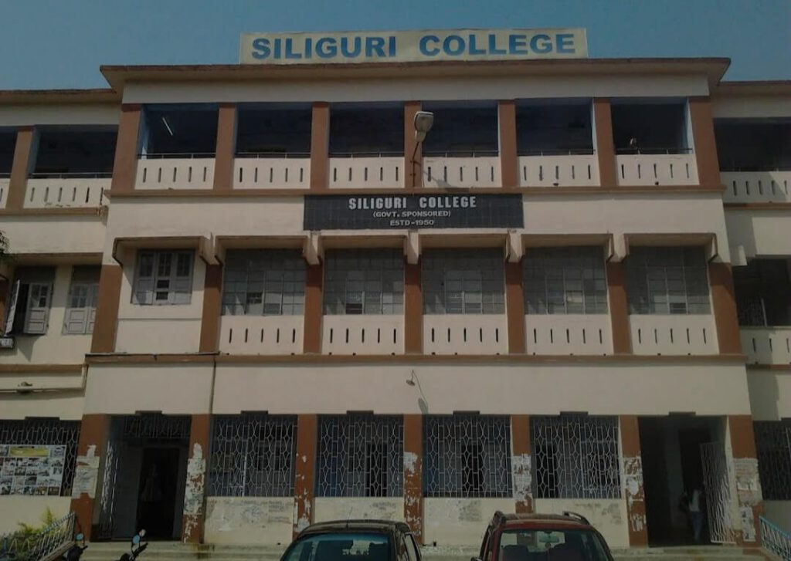
Siliguri College started in 1950. It is the first college in Siliguri and many people know it from long time. The college is under North Bengal University and students from different areas come here to study. The main aim of this college was to give good education at low fees. Along with studies, students also take part in small programs and activities. This helps them learn confidence and face future life better.
Courses Offered: B.A., B.Sc., BBA, BCA, M.A., and M.Sc
Fees: The total course fee ranges between Rs. 10000 to 185000.
Website- http://siliguricollege.org.in/
Contact Details:
Mobile No.- 0353 243 6590
Address: Siliguri College Campus Road, Ward 17, Hakim Para, Siliguri
Siliguri College of Commerce
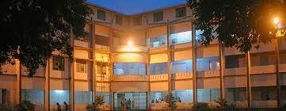
Siliguri College of Commerce was started in 1962 in Siliguri, West Bengal. The college is affiliated with the University of North Bengal and is mainly known for commerce studies. Many students who want to study B.Com choose this college. The college has experienced teachers and basic facilities like a library and computer room for students. There is also a friendly campus environment where students study together, share ideas and take part in college activities.
Courses Offered: UG Courses in Arts and Sciences and PG Courses in Bengali and Geography
Fees: The fees for B.Com (Hons) and BBA (Hons) are around INR 2400 and INR 2250 per semester, respectively.
Website: https://www.siliguricollegeofcommerce.org/
Contact Details:
Mobile No.- 0353 243 2594
Email: siliguricollegeof_commerce@yahoo.com
Address: College Para, Hakim Para, Siliguri
Surya Sen College
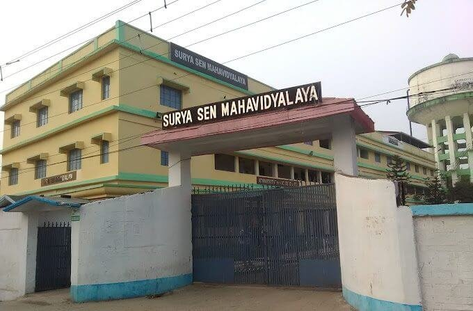
Surya Sen Mahavidyalaya, also called Surya Sen College, was started in 1998 in Siliguri, West Bengal. It is a government-aided college and many students choose it because the fees is affordable. The college mainly offers undergraduate courses. Students can study Arts, Science and Commerce here as per their interest. The college follows a simple teaching system and is helpful for students who want good education without high cost.
Course Offered: B.A., B.Sc, and B.Com
Fees: The total course fees ranges between Rs. 11,310 to Rs.13,830.
Website: https://suryasencollege.org.in/
Contact Details:
Mobile No.- 094763 87939
Email: suryasen@suryasencollege.org.in
Address: Surya Sen Colony, Babupara, Siliguri
Acharya Prafulla Chandra Roy Government College
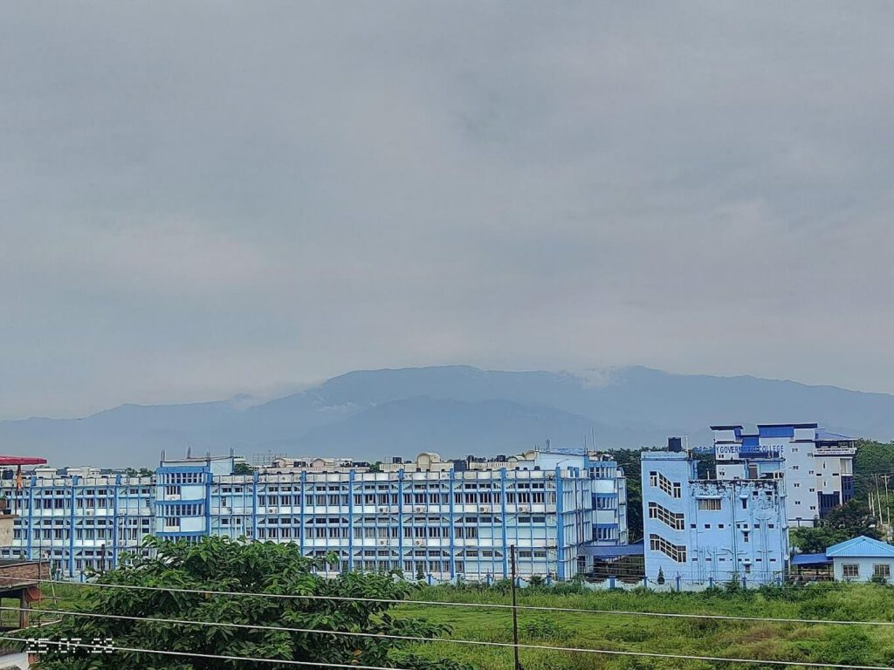
This college was started in 2010 and it was named after Acharya Prafulla Chandra Roy, who was a famous Indian scientist. The college is located in a quiet area, which is good for study and learning. There are proper classrooms and laboratories for students. These facilities help in daily teaching and practical work. The college gives a simple learning environment where students can focus on studies and improve their knowledge step by step.
Courses Offered: The college offers undergraduate courses in Botany, Chemistry, Physics, Mathematics, and Zoology.
Fees: The fee for the undergraduate courses is around Rs. 3000 per year.
Website: http://www.apcrgc.org
Contact Details:
Mobile No.- 0353 257 1340
Email: apcrgc.admission@gmail.com
Address: Himachal Vihar Phase 1, Matigara, Siliguri
Government Colleges in Cooch Behar District
Netaji Subhas Mahavidyalaya
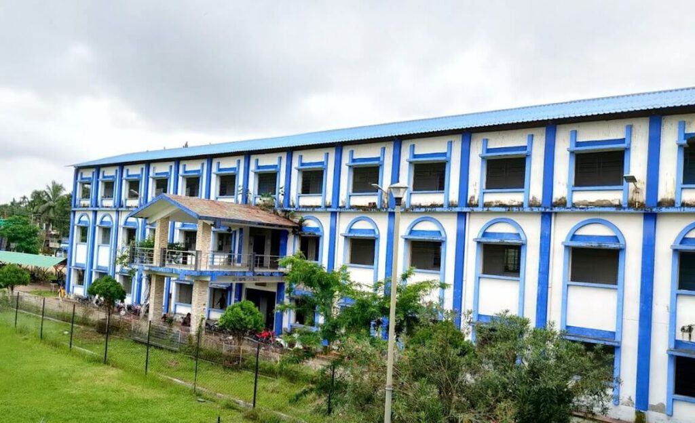
Established in 1985, Netaji Subhas Mahavidyalaya stands as a bridge in the educational journey of students in the region. The college started with 6 teaching and 9 non-teaching staff and now has emerged as a higher educational institute. At present, college offers 4 years undergraduate programme courses. It offers undergraduate courses in Arts and Commerce. Situated in Cooch behar, the college is also known as Haldibari College, is a general degree college. With its commitment to academic excellence and an inclusive learning atmosphere, Netaji Subhash Mahavidyalaya continues to empower young minds and nurture future leaders in the region.
Courses: The college offers UG programs like BA, BCom and BSc
Fees: The fees vary, but usually cost around 2000 to 16000, depending on the course.
Website: https://www.nsmahavidyalaya.org.in/
Contact Details:
Mobile No.- 3561263266
Email: nsmahavidyalaya@rediffmail.com
Address: Santi Nagar, Uttar para, Haldibari, Cooch Behar
Dinhata College
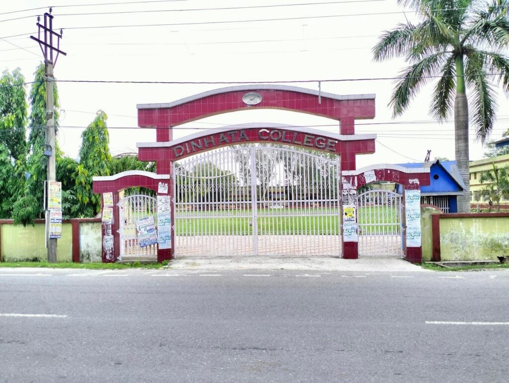
Founded in 1956, Dinhata college is a Government-aided general degree college , one of the oldest colleges in Dinhata, West Bengal. The college was founded to bring higher education, especially for students of rural background and first-generation learners. Affiliated with Cooch Behar Panchana Brahma University and recognised under UGC, the college has spread across 16 acre campus, it boasts a large central library, separate girls and boys hostel, sports facilities and support services like career counselling and scholarships. The college offers a wide array of undergraduate courses in Arts, Science, and Commerce, with honours programmes. Dinhata college also encourages students to participate in extracurricular activities like NSS, NCC, seminars, awareness programs and many more, so the students can have a balanced learning environment.
Courses: BA, B.Com and B.Sc in wide range of subjects.
Fees: The fees vary depending on the course but the estimate can be around 1500 to 7000.
Website: dinhatacollege.ac.in
Contact Details:
Mobile No.- 9475104771
Email: principal@dinhatacollege.ac.in
Address: Dinhata Main Road, Dinhata
A.B.N. Seal College
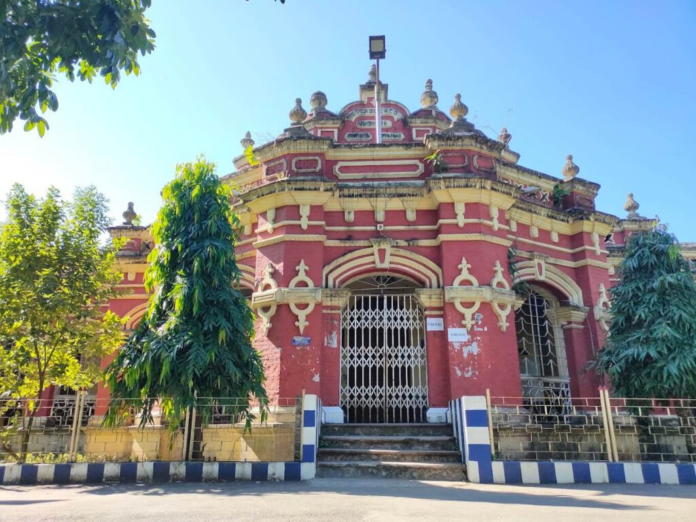
A.B.N. Seal College is one of the oldest colleges in Cooch Behar. It started in 1888. At first it was called Victoria College, but later they changed the name to A.B.N. Seal College after Acharya Brojendra Nath Seal, who was a famous teacher. Many students from near towns and villages come here to study. The college has courses in Arts and Science for undergrad and postgrad students. There are classrooms, library, and labs for practical work. The campus also has hostels for boys and girls.
Courses: BA, B.Sc, M.A., and M.Sc
Fees: The fees vary depending on the course but the estimate can be around 5,000 to 7,000.
Website: https://abnsealcollege.ac.in
Contact Details:
Mobile No.- 3582226112
Email: cobabnsealcollege@gmail.com
Address: Beside Rashmela Ground, Cooch Behar
University B.T. & Evening College

UBTEC is a government college in Cooch Behar. It started in 1968 and is under the University of North Bengal. Many students from nearby areas come here to study. Students can pick the course they like. There are classrooms, library, and labs for students. The campus is quiet and good for studying. There are also small events and activities in college which help students learn new things, and grow a little more besides studies.
Courses: BA, B.Sc, M.A., and M.Sc
Fees: The fees vary depending on the course but the estimate can be around 5,000 to 7,000.
Website: https://ubtec.org.in/index.aspx
Contact Details:
Mobile No.- 3582222714
Email: ubtandeveningcollege@gmail.com
Address: Takagachh Road, Takagachh, Cooch Behar
Sitalkuchi College
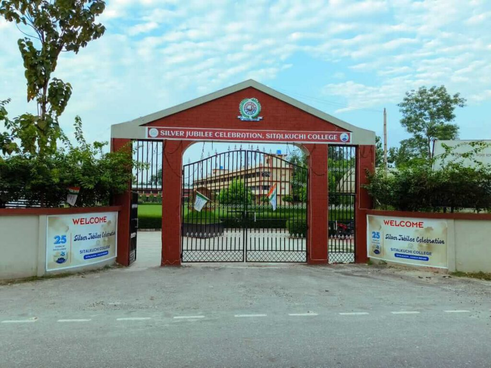
Sitalkuchi College is a government college in a small town in Cooch Behar district. It was started around 1999 to give higher education to students from nearby villages and towns. The college is affiliated with Cooch Behar Panchanan Barma University and many local students join here after their 12th. The college offers B.A. courses in many subjects like Bengali, English, History, Geography, Philosophy, Political Science, Sociology, Sanskrit and others. There are classes and practical labs where students learn and study together. Sitalkuchi College also has a library and a seminar room for group learning and small events. The campus is not very big but it feels calm and quiet which helps students to focus on their studies.
Courses: BA
Fees: The fees vary depending on the course but the estimate can be around 2,000 to 3,000.
Website: https://sitalkuchicollege.ac.in
Contact Details:
Mobile No.- 7076862323
Email: csitalkuchi@gmail.com
Address: Sitalkuchi, Cooch Behar
Government Colleges in Alipurduar District
Birpara College
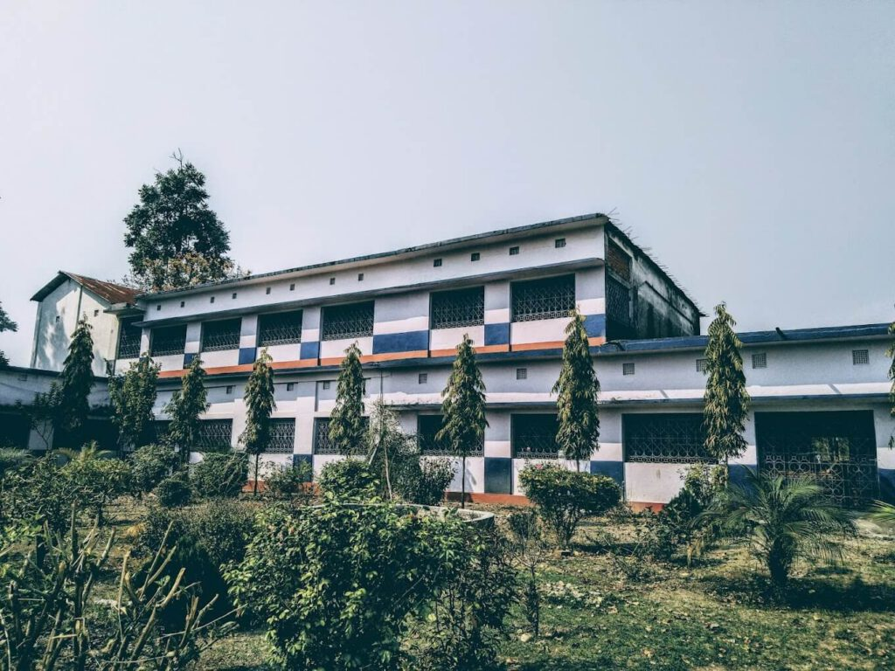
Birpara College is a government college in the town of Birpara in Alipurduar district. It was started to help local students get higher education without going far from home. The college offers courses in Arts and Science for students after 12th. There are classrooms, a library and basic labs for students to learn and study. The college also has some activities and events that help students gain confidence and enjoy college life.
Courses: BA, B.Com and B.Sc
Fees: The fees vary depending on the course but the estimate can be around 2,000 to 10,000.
Website: https://birparacollege.ac.in
Contact Details:
Mobile No.- 7872350041
Email: birparacollege@gmail.com
Address: College Para, Birpara, Birpara Tea Garden
Alipurduar Mahila Maha Vidyalaya
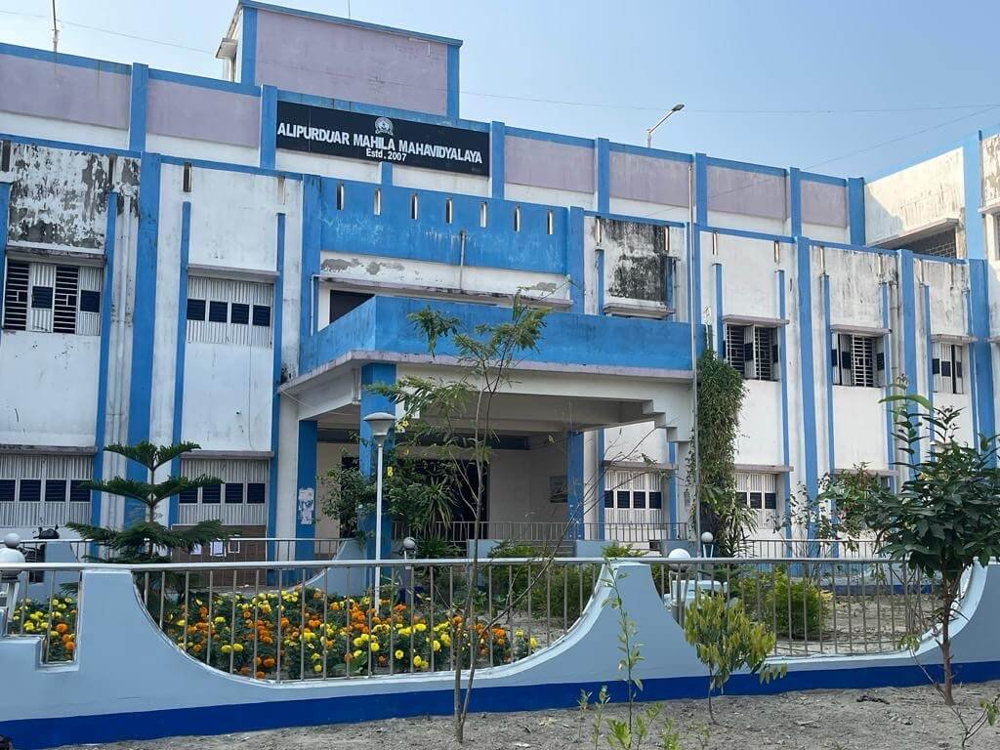
Alipurduar Girls’ College is a government college in Alipurduar town. It was started mostly for girls from nearby places so they don’t have to go far to study. Many students join here after 12th because it is close to home and the courses in Arts and Science are good. There is a library, and few labs where students can do practical work. Students also join small events, cultural programs and group activities, which helps them make friends and feel more confident. The campus is calm and safe, so parents feel fine sending their daughters here.
Courses: BA, BBA and MA
Fees: The fees vary depending on the course but the estimate can be around 11,000 to 20,000.
Website: https://alipurduargirlscollege.org
Contact Details:
Mobile No.- 3564 251962
Email: apdgirlscollege@gmail.com
Address: Loharpool, New Town, Alipurduar
Saheed Kshudiram College
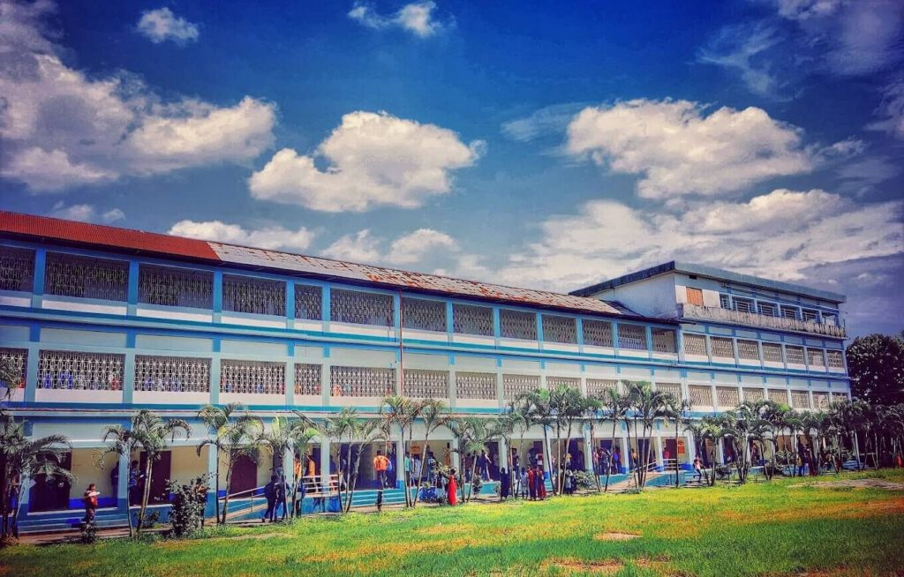
Saheed Kshudiram College, or SK College, is a government college in Kamakhyaguri, Alipurduar. Many students from nearby villages and towns come here after 12th. The college has courses like B.A. and B.Sc., and students can pick the subjects they like. There are classrooms, a library and some labs where students can do practical work. Sometimes there are small events and activities which students join to learn new things and feel more confident.
Courses: BA and B.Sc
Website: https://skcollege.org
Contact Details:
Mobile No.- 03564260419
Email: saheedkshudiramcollege@gmail.com
Address: Uttar Kamakhyaguri, West Bengal
Falakata Polytechnic College
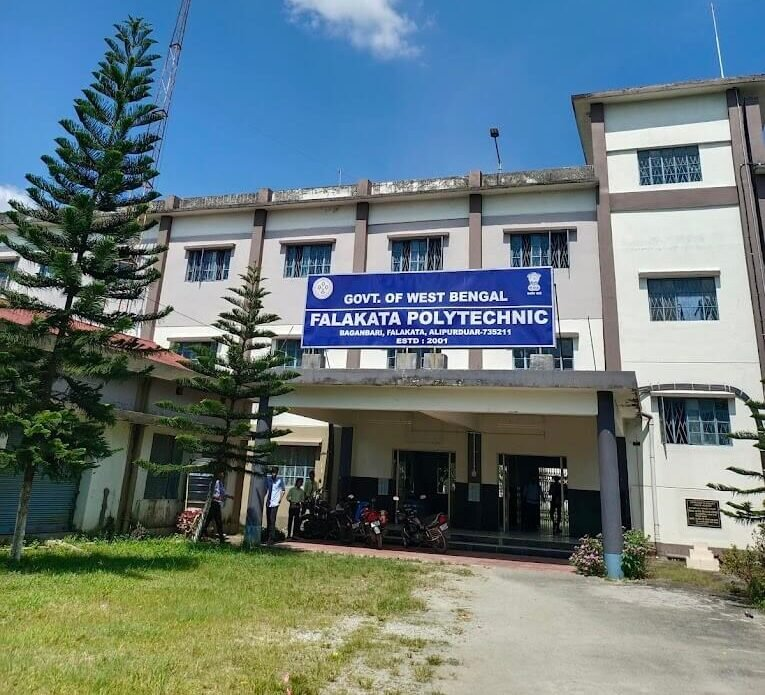
Falakata Polytechnic College stands out as a promising hub for technical education, offering students a strong foundation in engineering skills that match today’s industry needs. It was founded in 2001, a public institute, with only two courses but gradually grew into a five course institute with five specialisation in full time mode. The college has a well laid infrastructure with multiple facilities. Students can choose from diploma course in key engineering fields, each designed to build competence and confidence for future employment.
Courses: Diploma in Engineering
Website: https://polytechnic.wbtetsd.gov.in/falakatapoly
Contact Details:
Mobile No.- 03563299677
Email: falakatapoly@gmail.com
Address: Polytechnic College road, Falakata, Baganbari
Alipurduar Government Engineering and Management College
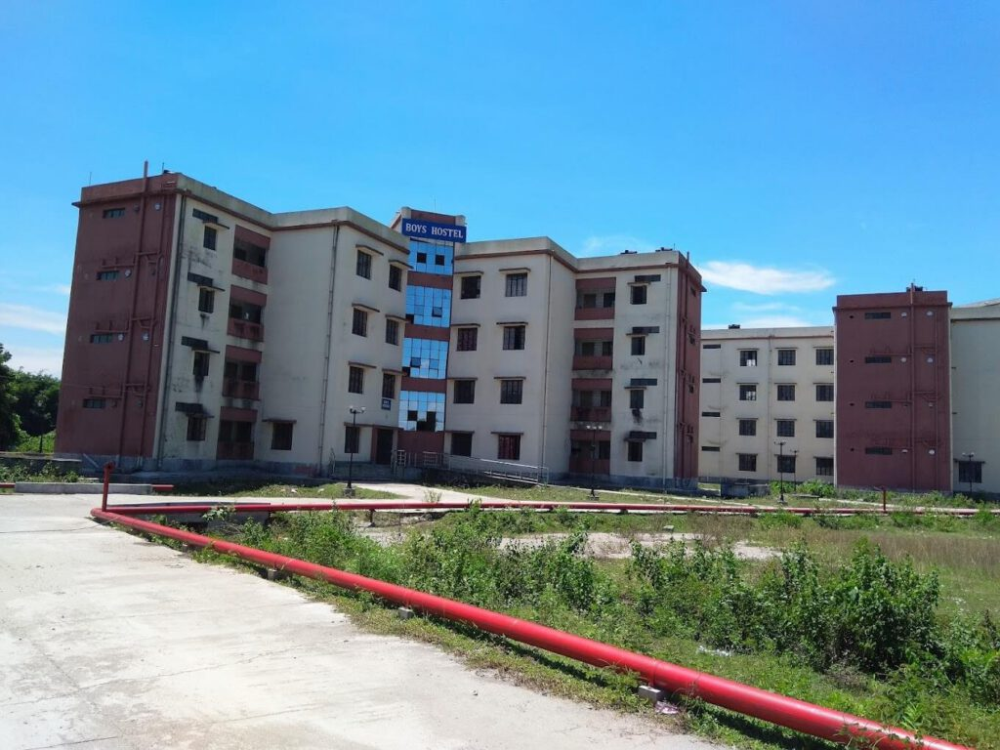
A.G. Engineering & Management College, known as AGEMC, is a college in Alipurduar where many students come to study engineering and other courses after finishing 12th. The college was started to give good technical education to students from nearby towns and villages. Here students can learn subjects like engineering and management with help from teachers who try to explain things in simple way.
Courses: B.E and B.Tech
Fees: The total course fees ranges between 24,000 to 50,000.
Website: https://agemc.ac.in
Contact Details:
Mobile No.- 9832328554
Address: Bakla, Chhipra
Government Colleges in Dinajpur District
Shree Agrasen Mahavidyalaya
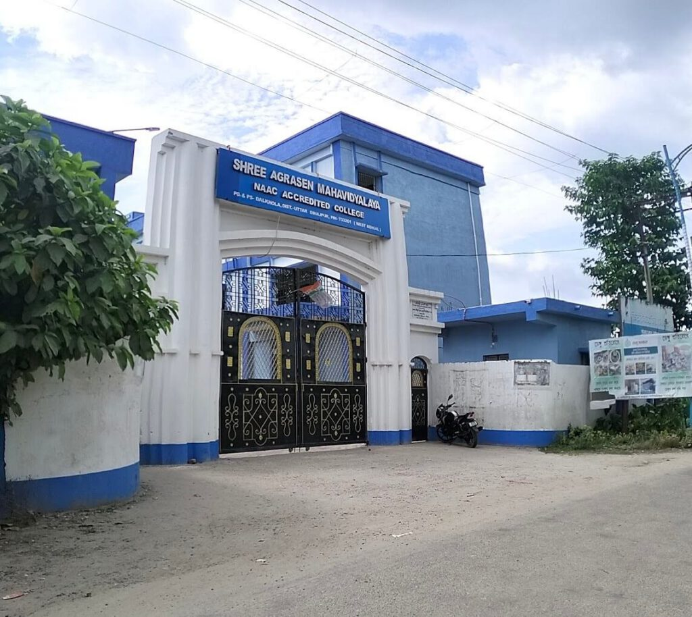
Shree Agrasen Mahavidyalaya started because there was really no college nearby for students, almost 50 km around. People needed a place to study higher education, so this college was made. It is connected with North Bengal University, so the degree is proper and recognized. The campus has simple classrooms, a library, some computers, and small areas where students can do cultural and other activities. They offer courses in Arts, Science and Commerce. Many local students like it because it is close to home and they can learn without going far.
Courses: B.A., B.Com and B.Sc
Fees: The total course fees ranges between 10,000 to 14,000.
Website: https://samdlk.ac.in
Contact Details:
Mobile No.- 8768554868
Email: shreeagrasenmahavidyalaya@gmail.com
Address: Agrasen College, Bhusamani
Islampur College
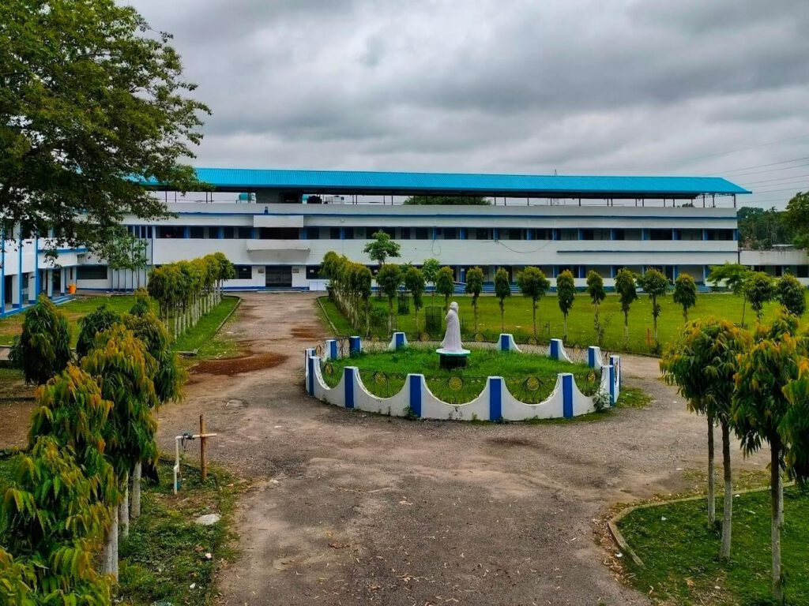
Islampur College is in Uttar Dinajpur. It started in 1983. Before this, students from nearby villages had very less options for college. So this college became important for many families. Mostly local students study here. The college has Arts, Commerce and Science courses. There are classrooms, one main library, labs and some space for sports and cultural programs. Many students choose this college because it is nearby and fees is also manageable. It helps students to continue studies without leaving home.
Courses: BA, B.Com and B.Sc
Fees: The fees of the courses may vary but generally range from approx 4,300 to 9,500.
Website: https://www.islampurcollege.ac.in/
Contact Details:
Mobile No.- 03365981568
Email: helpdesk@islampurcollege.ac.in
Address: Islampur College Road, Babupara, Islampur
Balurghat College
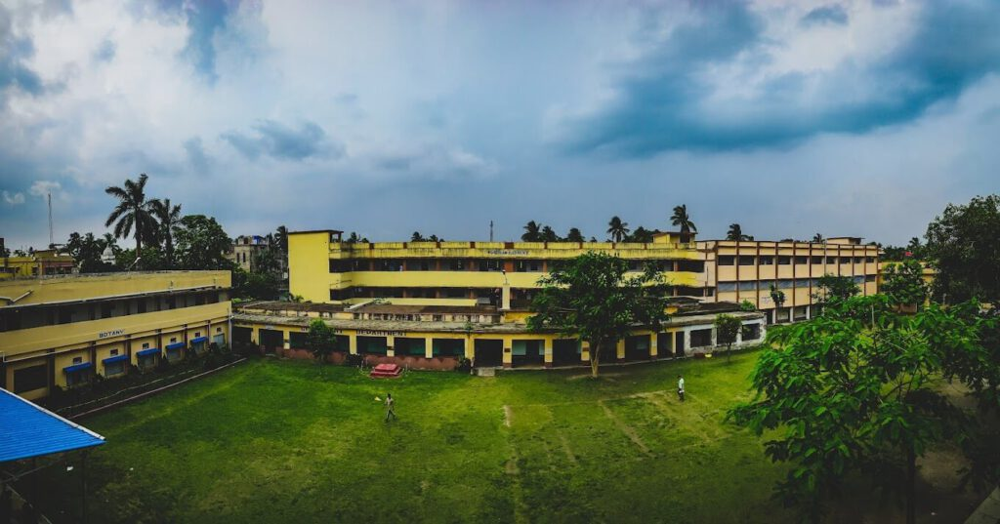
Balurghat College is a government-aided college in Dakshin Dinajpur. It is affiliated to the University of Gour Banga. The college was started mainly to give higher education to students from this area, as earlier options were very less. Many local students depend on this college for studies after school. The college offers both UG and PG courses in Arts, Science and Commerce. Subjects like Bengali, English, History, Geography, Economics, Physics, Chemistry, Botany, Zoology and Maths are taught here. The campus is quite big with classrooms, science labs, seminar halls and hostels. There are also spaces for sports and cultural programs.
Courses: BA, B.Com, B.Sc, M.A. and M.Sc
Fees: The fees of the courses may vary but generally range from approx 20,000 to 30,500.
Website: https://balurghatcollege.ac.in
Contact Details:
Mobile No.- 03522271465
Address: Rina Road, Shibtali, Balurghat
Kushmandi Government College
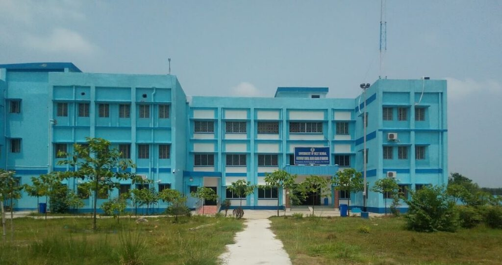
Kushmandi Government College is in Kushmandi area and many local students study here. It was opened so that students from villages don’t have to go far for college. Mostly Arts subjects are taught here and students join after passing 12th. The college has normal classrooms, a small library and some space where students sit and study together. Campus is quiet, not very crowded. Sometimes cultural programs happen and students take part. For nearby students, this college is useful because it is close to home and fees is also manageable.
Courses: BA and B.Sc
Fees: The fees of the courses may vary but generally range from approx 2,000 to 5,500.
Website: https://kushmandiggdc.in/welcome
Contact Details:
Mobile No.- 08348112333
Email: kushmandigovtcollege@gmail.com
Address: Mohagram,, Kushmandi, West Bengal
Government colleges in North Bengal are a good choice for many students. They are affordable and easy to reach. Students can find good colleges in Siliguri as well as in Darjeeling and nearby areas. These colleges offer basic courses and help students continue their studies without spending too much money. Before choosing a college, students should check the subjects, distance and facilities. A right college can help students move forward in life.

December 24, 2025